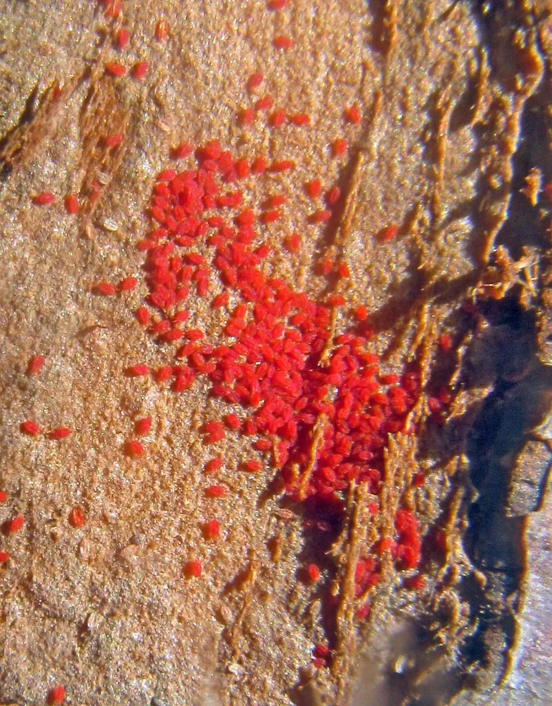

蛛形动物 · 动物界
苹果全爪螨 Panonychus ulmi

苹果等果树上的重要害螨，体色鲜红，背部有白色瘤突，吸食叶片汁液造成失绿，是世界性果树害虫。
- 分类
- 门节肢动物门纲蛛形纲目绒螨目科叶螨科属全爪螨属
- 栖息环境
- 苹果、梨、桃和葡萄等果树的叶片上
- 地理分布
- 全球温带果树产区，中国北方果园常见
- 保护级别
- IUCN 暂无评估；中国未列入国家重点保护名录
物种志
苹果全爪螨雌螨体长 0.3–0.4 mm，体色鲜红至暗红，身体呈圆形，背部有白色瘤突，每个瘤突上长一根刚毛；雄螨体型较小，体色较浅，足较长。
它分布遍及全球的苹果、梨、桃和葡萄产区，在中国北方果园常见，以卵在树皮裂缝和枝条上越冬，春季孵化后爬到叶片上取食。受害叶片出现灰白色斑点，严重时整叶失绿、提早脱落，影响果实品质和产量。苹果全爪螨繁殖快，一年可发生多代，干旱炎热时容易暴发；它的卵呈橙红色，常密集成片。防治以保护捕食螨等天敌、合理修剪和科学用药为主。目前 IUCN 暂无评估；中国未列入国家重点保护名录。
形态与习性
- 食性刺吸苹果、梨、桃和葡萄叶片汁液
- 体长雌螨 0.3–0.4 mm
- 识别体鲜红，背部有白色瘤突和刚毛
- 生活史以卵在树皮裂缝越冬，一年发生多代
- 危害叶片失绿、提早脱落，影响果实品质
- 防治保护捕食螨等天敌，合理修剪和用药
趣味知识
- 苹果全爪螨的身体鲜红，背上还长着一排白色小瘤突。
- 它把卵产在树皮裂缝里越冬，春天孵化后爬上嫩叶。
- 果园里保护捕食螨，往往比单纯喷药更能控制它的数量。